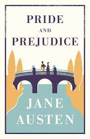

Author:Jane Austen
Working title:First Impressions
Country:United Kingdom
Language:English
Genre:Classic Regency novel
Romance:novel Set in Hertfordshire and Derbyshire, c. 1812
Publisher:T. Egerton, Whitehall
Publication date:28 January 1813
Introduction
Pride and Prejudice is an 1813 novel of manners written by Jane Austen. The novel follows the character development
of Elizabeth Bennet, the dynamic protagonist of the book who learns about the repercussions of hasty judgments and
comes to appreciate the difference between superficial goodness and actual goodness.
Mr. Bennet, owner of the Longbourn estate in Hertfordshire, has five daughters, but his property is entailed and can
only be passed to a male heir. His wife also lacks an inheritance, so his family faces becoming very poor upon his
death. Thus, it is imperative that at least one of the girls marry well to support the others, which is a motivation
that drives the plot.
Pride and Prejudice has consistently appeared near the top of lists of "most-loved books" among literary scholars
and the reading public. It has become one of the most popular novels in English literature, with over 20 million
copies sold, and has inspired many derivatives in modern literature.[1][2] For more than a century, dramatic
adaptations, reprints, unofficial sequels, films, and TV versions of Pride and Prejudice have portrayed the
memorable characters and themes of the novel, reaching mass audiences.[3]

Plot Summary
In rural England in the early 19th century, Mrs. Bennet attempts to persuade Mr. Bennet to visit Mr. Bingley, a rich
bachelor recently arrived in the neighbourhood. After some verbal sparring with her husband, Mrs. Bennet believes he
will not call on Mr. Bingley. Shortly afterwards, he visits Netherfield, Mr. Bingley's rented residence, much to
Mrs. Bennet's delight. The visit is followed by a ball at the local assembly rooms that the entire neighbourhood
attends.
At the ball, the neighbourhood is introduced to the whole Netherfield party, which consists of Mr. Bingley, his two
sisters, the husband of one of his sisters, and Mr. Darcy, his dearest friend. Mr. Bingley's friendly and cheerful
manner earns him popularity among the guests. He appears attracted to Jane Bennet (the eldest Bennet daughter), with
whom he dances twice. Mr. Darcy, reputed to be twice as wealthy, is haughty and aloof, causing a decided dislike of
him. He declines to dance with Elizabeth (the second-eldest Bennet daughter), stating that she is not attractive
enough to tempt him.[4] Elizabeth finds this amusing and jokes about it with her friends.
Mr. Bingley's sisters, Caroline and Louisa, later invite Jane to Netherfield for dinner. On her way there, Jane is
caught in a rain shower and develops a bad cold, forcing her to stay at Netherfield to recuperate, much to Mrs.
Bennet's delight. When Elizabeth goes to see Jane, Mr. Darcy finds himself attracted to Elizabeth (stating she has
"fine eyes"), while Miss Bingley grows jealous, as she herself has designs on Mr. Darcy. Elizabeth herself is
indifferent and unaware of his developing interest in her.
Mr. Collins, Mr. Bennet's cousin and the heir to the Longbourn estate, visits the Bennet family. He is a pompous,
obsequious clergyman who intends to marry one of the Bennet girls. After learning that Jane may soon be engaged, he
quickly decides on Elizabeth, the next daughter in both age and beauty.
Elizabeth and her family meet the dashing and charming army officer, George Wickham, who singles out Elizabeth. He
says he is connected to the Darcy family and claims Mr. Darcy deprived him of a "living" (a permanent position as a
clergyman) promised to him by Mr. Darcy's late father. Elizabeth's dislike of Mr. Darcy is confirmed.[4]
At a subsequent ball at Netherfield, Mr. Darcy asks Elizabeth to dance, and, despite her vow never to dance with
him, she accepts. However, Elizabeth's mother and younger sisters display a distinct lack of decorum. Mrs. Bennet
hints loudly that she fully expects Jane and Bingley to become engaged, and the younger Bennet sisters expose the
family to ridicule by their silliness.
Mr. Collins proposes to Elizabeth. She rejects Collins, to her mother's fury and her father's relief. After
Elizabeth's rejection, Mr. Collins proposes to Charlotte Lucas, a sensible young woman and Elizabeth's friend, who
is already aged 27. Charlotte is grateful for a proposal that guarantees her a comfortable home and a secure future.
Elizabeth is aghast at such pragmatism in matters of love. Shortly afterward, the Bingleys suddenly depart for
London with no plans to return, and it appears that Mr. Bingley has no intention of resuming their acquaintance. A
heartbroken Jane visits her Aunt and Uncle Gardiner in London to raise her spirits.
In the spring, Elizabeth visits Charlotte and Mr. Collins in Kent. Elizabeth and her hosts are invited to Rosings
Park, the imposing home of Lady Catherine de Bourgh, imperious patroness of Mr. Collins and Mr. Darcy's wealthy
aunt. Lady Catherine expects Mr. Darcy to marry her daughter, as planned in his childhood by his aunt and mother.
Mr. Darcy and his cousin, Colonel Fitzwilliam, are also visiting at Rosings Park. Fitzwilliam tells Elizabeth how
Mr. Darcy recently saved a friend, presumably Bingley, from an undesirable match. Elizabeth realises that the
prevented engagement was to Jane and is horrified that Mr. Darcy interfered. Later, Mr. Darcy proposes to Elizabeth,
declaring his love for her despite her low social connections. She rejects him angrily, firmly stating that he is
the last person she would ever marry and saying she could never love a man who caused her sister such unhappiness;
she further accuses him of treating Wickham unjustly. Mr. Darcy brags about his success in separating Bingley and
Jane and suggests that he had been kinder to Bingley than to himself. He dismisses the accusation regarding Wickham
sarcastically but does not address it.
Later, Mr. Darcy gives Elizabeth a letter, explaining that Wickham, the son of his late father's steward, had
refused the living his father had arranged for him and was instead given money for it. Wickham quickly squandered
the money and when impoverished, asked for the living again. After being refused, he tried to elope with Darcy's
15-year-old sister, Georgiana, for her considerable dowry. Mr. Darcy also writes that he separated Jane and Bingley
due to Jane's reserved behaviour, sincerely believing her indifferent to Bingley, and also because of the lack of
propriety displayed by some members of her family. Elizabeth is ashamed by her family's behaviour and her own lack
of better judgement that resulted in blinded prejudice against Mr. Darcy.